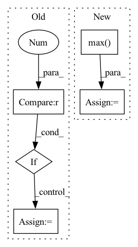

Pattern ID :32043
Before Change
for i, wgt in enumerate(weights):
new_dims = original_dims[:i + 2] + "z" + original_dims[i + 3:]
reduced_dim = original_dims[i + 2]
if i > 0 :
inp = activate(inp)
inp = jnp.einsum(f"{original_dims},{reduced_dim}z,{reduced_dim}z->{new_dims}", inp, wgt, mask)
return inp.reshape(original_shape)
After Change
original_shape = inp.shape
max_dims = math.floor(math.log(ctx.dims.sequence, ctx.dims.spatial_mixing_kernel))
batch = lax.max( ctx.dims.sequence // ctx.dims.spatial_mixing_kernel ** (depth % max_dims + 1), 1)
mask = jnp.logical_not(jnp.tri(ctx.dims.spatial_mixing_kernel, k=-1)) if ctx.model.autoregressive else 1
out = inp.reshape(ctx.dims.batch * batch, ctx.dims.spatial_mixing_kernel, -1, ctx.dims.features)
out = jnp.einsum("bkrf,kg,kg->bgrf", out, wgt0, mask)
out = activate(ctx, out)
out = jnp.einsum("bkrf,kg,kg->bgrf", out, wgt1, mask)
return out.reshape(original_shape)
In pattern: SUPERPATTERN
Frequency: 7
Non-data size: 5
Instances Fragment ID: 93957368
Project Name: homebrewnlp/homebrewnlp-jax
Commit Name: acfb8d5fbb1ba8f6b7830832f913663e426b9d09
Time: 2022-09-01
Author: 39779310+ClashLuke@users.noreply.github.com
File Name: src/model/mixer.py
M Class Name: AnonimousClass
N Class Name: AnonimousClass
M Method Name: mix(3)
N Method Name: mix(2)
M Parent Class:
N Parent Class:
M File Name: src/model/mixer.py
N File Name: src/model/mixer.py
M Start Line: 14
M End Line: 32
N Start Line: 13
N End Line: 29
Before Change
loss = 0
n = torch.sum(y_true[..., 4] == 1)
if n != 0 :
//---------------------------------------------------------------//
// 计算预测结果和真实结果的giou
//----------------------------------------------------------------//
giou = self.box_giou(pred_boxes, y_true[..., :4])
loss_loc = torch.mean((1 - giou)[y_true[..., 4] == 1])
loss_cls = torch.mean(self.BCELoss(pred_cls[y_true[..., 4] == 1], self.smooth_labels(y_true[..., 5:][y_true[..., 4] == 1], self.label_smoothing, self.num_classes)))
loss += loss_loc * self.box_ratio + loss_cls * self.cls_ratio
//-----------------------------------------------------------//
// 计算置信度的loss
//-----------------------------------------------------------//After Change
loss = loss_loc * self.box_ratio + loss_conf * self.balance[l] * self.obj_ratio + loss_cls * self.cls_ratio
num_pos = torch.sum(y_true[..., 4])
num_pos = torch.max( num_pos, torch.ones_like(num_pos))
return loss, num_pos
def get_near_points(self, x, y, i, j):
sub_x = x - i Fragment ID: 93957371
Project Name: bubbliiiing/yolov5-pytorch
Commit Name: d49e041b6f4ef50c5d94ce88d33d147f3227bc77
Time: 2022-01-15
Author: 47347516+bubbliiiing@users.noreply.github.com
File Name: nets/yolo_training.py
M Class Name: YOLOLoss
N Class Name: YOLOLoss
M Method Name: forward(4)
N Method Name: forward(4)
M Parent Class: nn.Module
N Parent Class: nn.Module
M File Name: nets/yolo_training.py
N File Name: nets/yolo_training.py
M Start Line: 158
M End Line: 198
N Start Line: 156
N End Line: 200
Before Change
// Pad examples to have same length.
max_length = max([len(t) for t in asr_tokens])
if max_length == 0 :
max_length = 1 // The ASR may output empty transcripts.
for t in asr_tokens:
t += [0] * (max_length - len(t))
asr_tokens = torch.tensor([t for t in asr_tokens])After Change
// Pad examples to have same length.
// Manage length of predicted tokens
asr_tokens_lens = torch.tensor([max(len(t), 1) for t in asr_tokens])
max_length = asr_tokens_lens.max() .item()
for t in asr_tokens:
t += [0] * (max_length - len(t))
asr_tokens = torch.tensor([t for t in asr_tokens]) Fragment ID: 93957358
Project Name: speechbrain/speechbrain
Commit Name: 31429ba76a94ea5481408307f5272c6b15034fc4
Time: 2021-01-18
Author: loren.lugosch@gmail.com
File Name: recipes/timers-and-such/multistage/train/train.py
M Class Name: SLU
N Class Name: SLU
M Method Name: compute_forward(3)
N Method Name: compute_forward(3)
M Parent Class: sb.Brain
N Parent Class: sb.Brain
M File Name: recipes/timers-and-such/multistage/train/train.py
N File Name: recipes/timers-and-such/multistage/train/train.py
M Start Line: 54
M End Line: 64
N Start Line: 55
N End Line: 61
Before Change
x, y = np.log(FLOAT_SCALES), np.log(errs)
filt = np.isfinite(y)
x, y = x[filt], y[filt]
if len(x) > 2 :
corrcoef = np.corrcoef(x, y)[0, 1]
if np.isfinite(corrcoef):
self.assertGreater(corrcoef, .7)
After Change
print(prediction1_prime)
print(prediction2)
print(np.max(np.square(prediction1_prime - prediction2)))
err = np.max( np.square(prediction1_prime - prediction2))
self.assertLess(err, 1e-5)
@settings(deadline=None)
@given( Fragment ID: 93957360
Project Name: klarh/geometric_algebra_attention
Commit Name: 549321f82c9b20c24ecf43b58cb03935d980e18e
Time: 2022-01-14
Author: mspells@vectorinstitute.ai
File Name: tests/test_internals.py
M Class Name: AllTests
N Class Name: AllTests
M Method Name: test_rotation_covariance_vector(8)
N Method Name: test_rotation_covariance_vector(8)
M Parent Class:
N Parent Class:
M File Name: tests/test_internals.py
N File Name: tests/test_internals.py
M Start Line: 141
M End Line: 164
N Start Line: 118
N End Line: 136
Before Change
ignore_max_overlaps, _ = ignore_overlaps.max(dim=1)
ignore_bboxes_inds = torch.nonzero(
ignore_max_overlaps > self.ignore_iof_thr).squeeze()
if ignore_bboxes_inds.numel() > 0 :
overlaps[ignore_bboxes_inds[:, 0], :] = -1
assign_result = self.assign_wrt_overlaps(overlaps, gt_labels)
return assign_resultAfter Change
else:
ignore_overlaps = bbox_overlaps(
gt_bboxes_ignore, bboxes, mode="iof")
ignore_max_overlaps, _ = ignore_overlaps.max(dim=0)
overlaps[:, ignore_max_overlaps > self.ignore_iof_thr] = -1
assign_result = self.assign_wrt_overlaps(overlaps, gt_labels)
return assign_result Fragment ID: 93957362
Project Name: wxinlong/solo
Commit Name: 801c8b19931fb40774eda6dbb6917b6d1085ce8a
Time: 2019-02-13
Author: chenkaidev@gmail.com
File Name: mmdet/core/bbox/assigners/max_iou_assigner.py
M Class Name: MaxIoUAssigner
N Class Name: MaxIoUAssigner
M Method Name: assign(5)
N Method Name: assign(5)
M Parent Class: BaseAssigner
N Parent Class: BaseAssigner
M File Name: mmdet/core/bbox/assigners/max_iou_assigner.py
N File Name: mmdet/core/bbox/assigners/max_iou_assigner.py
M Start Line: 72
M End Line: 84
N Start Line: 75
N End Line: 90
Before Change
abs_boxes = abs_boxes.round().astype(np.int32)
// Convert to polygons --> (N, 4, 2)
if abs_boxes.shape[1] == 5 :
boxes_size = np.minimum(abs_boxes[:, 2], abs_boxes[:, 3])
polys = np.stack([
rbbox_to_polygon(tuple(rbbox)) for rbbox in abs_boxes // type: ignore[arg-type]
], axis=0)
else:After Change
cv2.fillPoly(seg_target[idx], [poly.astype(np.int32)], 1)
else:
if box.shape == (4, 2):
box = [np.min(box[:, 0]), np.min(box[:, 1]), np.max( box[:, 0]) , np.max(box[:, 1])]
seg_target[idx, box[1]: box[3] + 1, box[0]: box[2] + 1] = True
// top edge
edge_mask[idx, box[1], box[0]: min(box[2] + 1, w)] = True Fragment ID: 93957365
Project Name: mindee/doctr
Commit Name: e8583f38a649dc76153b9cbf4f07c025c54cab57
Time: 2021-12-26
Author: charles@mindee.co
File Name: doctr/models/detection/linknet/base.py
M Class Name: _LinkNet
N Class Name: _LinkNet
M Method Name: build_target(3)
N Method Name: build_target(3)
M Parent Class: BaseModel
N Parent Class: BaseModel
M File Name: doctr/models/detection/linknet/base.py
N File Name: doctr/models/detection/linknet/base.py
M Start Line: 174
M End Line: 188
N Start Line: 135
N End Line: 161
Before Change
zero_point = round(-x_min / delta)
// re-calculate the scale delta if zero-point is not 0,
if zero_point != 0 :
delta = -x_min / zero_point
// convert delta to tensor for further optimization
delta = torch.tensor(delta).type_as(x)
elif self.scale_method == "mse":After Change
elif self.scale_method == "mse":
// we always use symmetric quantization in mse mode
x_absmax = x.abs().max()
best_score = 1000
for i in range(80):
new_max = x_absmax * (1.0 - (i * 0.01))
x_q = self.quantize(x, new_max) Fragment ID: 93957366
Project Name: yhhhli/brecq
Commit Name: 889d90425364ace36bcc549d7298d1e073f865c0
Time: 2021-02-18
Author: loafyuhang@gmail.com
File Name: quant/quant_layer.py
M Class Name: UniformAffineQuantizer
N Class Name: UniformAffineQuantizer
M Method Name: init_quantization_scale(3)
N Method Name: init_quantization_scale(3)
M Parent Class: nn.Module
N Parent Class: nn.Module
M File Name: quant/quant_layer.py
N File Name: quant/quant_layer.py
M Start Line: 97
M End Line: 128
N Start Line: 114
N End Line: 125